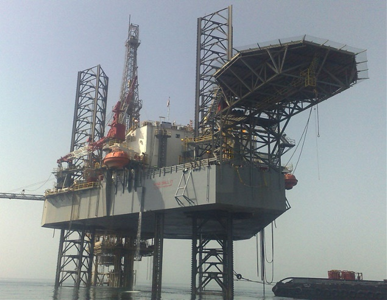

Careers
CareersOffshore Drilling Jobs.
AD’s offshore fleet operates jackup rigs across the Arabian Gulf. Demanding work on critical assets, with strong safety and technical standards.
Search offshore roles →
Offshore drilling at AD is precise, focused work.
Jackup rigs operate on rotation in the Gulf. Crews live, eat, and work together in tight teams where trust and discipline matter every shift.
If you are an experienced offshore hand or willing to build offshore certifications, AD can be a long-term home.
What we offer offshore
- Work on AD’s growing jackup fleet across the Arabian Gulf.
- Rotation schedules with clear time on and time off cycles.
- Training for OPITO BOSIET and other offshore certifications where the role requires.
- Exposure to marine operations and complex drilling programs.
What we expect offshore
- Strict safety and emergency response discipline.
- Reliability across rotation cycles and in tight crew environments.
- Physical readiness and adaptability to offshore living conditions.
- Respect for marine and crew protocols.
Offshore roles.
Offshore Driller
Senior operational role on the jackup, running the drilling crew on shift.
Crane Operator
Operating offshore cranes for lifting, materials handling, and supply boat operations.
Offshore HSE Officer
Field HSE leadership on jackup operations and during marine activities.
Mechanic / Electrician
Reliability and breakdown response on critical offshore equipment.
Subsea Engineer
Subsea systems, BOP, well control equipment, and offshore engineering support.
Offshore Installation Manager
Overall responsibility for rig safety, operations, and crew leadership.